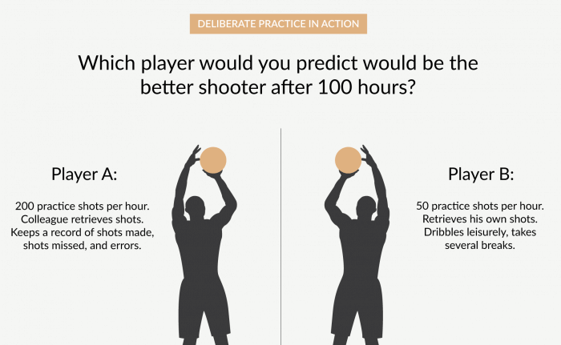

How To Learn A Skill Faster
Have you ever wanted or neeeded to pick up a skill quickly. Or tried to play an instrument and give up becuase it was too slow or too hard? Well that has happened to almost everybone and hopefully this article will help to give you some guidance on how to tackle these learning challenges better. Remember these concepts and Ideas apply to everything not just music, it can be mental like mathmatics or physical like basketball.
"If knowledge is power learning is your super power" - Jim Kwik memory and brain expert
The Three Stages Of Learning
The cognitive stage
The cognitive stage is where you are gathering and learning information and have very little profeciency in your skill. This is where your ability to achieve in your skill is very varied and inconsistent but the good thing is that this is the area that you can quickly improve in and get out of.
The associative stage
Here you reflect on your ability better now that you know more information on the skill. You are able to identify the mistakes you made during preformances and preactice.This is where we need to practice more to get further. It is harder to increase you ability, it is almost like the quick gains of the congnitive stage are gone and you get into the nitty gritty.
The autonomous stage
This is the stage everyone wants to get to.Infact, the title "The autonomous stage" can be swapped out for mastery. Here you have complete profeciency and can apply and use the skill automatically. There very little to no difficulty in preforming the task and can be done so effortlessly.
The 4 Stages Of Skill devaloptment
Step One: Decontstructing the skill.Here you breakdown your chosen skill into different parts. Then prioritize those parts based on your goals for your chosen skill. As an example we have the guitar, if we have a person whos priority it is to become the next slash then their prioritized list may look something like this:
- Scale Practice
- Picking and Fingering Practice
- Ear training
- Etc.
Once you have made a priotritized list then you can go on to learn about each sub skill. The problem with that detail is that many people tend to dive too deep and fall into a rabit of of reaserch and not actual practice the skill. This idea that you must learn all about a each individual sub skill will actual be a detrament if you are under time restriction. Well then how do you if enough is enough? Well all you need is just enough information to see and understand the mistakes and self correct.
Step Three:Eliminating BarriersIn this step we must find what will or may stop us from getting to our goals and eliminate those barriers. Wether they be motivation or procrastination (to learn more about how you can stop procrastinating click here).
Step Four: Deliberate PracticeSo now that you have broken down your skill into its key components, learned about those components and eliminated barriers to your succes it is now time to practice. An important part of this step is the "Deliberate" part. What is does this mean? It means that you are focused and intentional. That you have a goal for each practice session and you go in ready to work hard. You could do the opposite and do leisurely practice, just sort of practicing, your mind elsewhere and your actions lacking a sense of intention and conviction.
If you wan to read more about skill learning you should read The First 20 Hours by Josh Kaufman or The Four Hour Chef by Tim Ferris